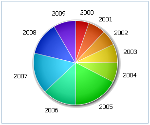

Pie Chart
A Pie Chart is a circular chart divided into sectors, illustrating relative magnitudes or frequencies. The arc length of each sector is proportional to the quantity it represents. Together, the sectors create a full disk.

For Pie Charts is also available all ordinary formatting (color, size, labels) but in addition to it is defined specific feature – 3D presentation.
Let’s start to create a Pie Chart yourself step by step. Later you can improve it by adding additional functions and propeties.
First, make some preparatory steps.
1. Select data of any avaliable format to present in your chart. In our examples we use Sales Information of one little company in json format.
var data = [ { sales:3.8, year:"2001" }, { sales:3.4, year:"2002" }, … { sales:4.8, year:"2009" } ]; chart.parse(data,"json");
2. Insert to your page an HTML container for your future chart. For example use the name “chart_container”.
<div id=" chart_container" style="width:280px;height:250px;"></div>
Now, we need to fill in an object constructor. Make the step and know the details.
3. Specify value ‘pie’ in the ‘view’ property of an object constructor to set a chart type.
var pieChart = new dhtmlXChart({ view:"pie" .... })
3. Define 'chart_container' in the ‘container’ property to set a chart container.
var pieChart = new dhtmlXChart({ view:"pie", container:"chart_container" ... })
4. Assign '#sales#' to the ‘value’ property to set data that Pie Chart will represent.
var pieChart = new dhtmlXChart({ view:"pie", container:"chart_container", value:"#sales#", ... })
5. Set outer pie labels (parameter 'label') e.g. value '#year#'. Know more about labels here
var pieChart = new dhtmlXChart({ view:"pie", container:"chart_container", value:"#sales#", label:"#year#" ... })
7. Enable gray radial gradient in the chart.
var pieChart = new dhtmlXChart({ view:"pie", container:"chart_container", value:"#sales#", label: "#year#", gradient: true })
10. Use method parse() to process data.
pieChart.parse(data,"json");
We've finished. Just run the application to see your creation.
Full code you can see here.